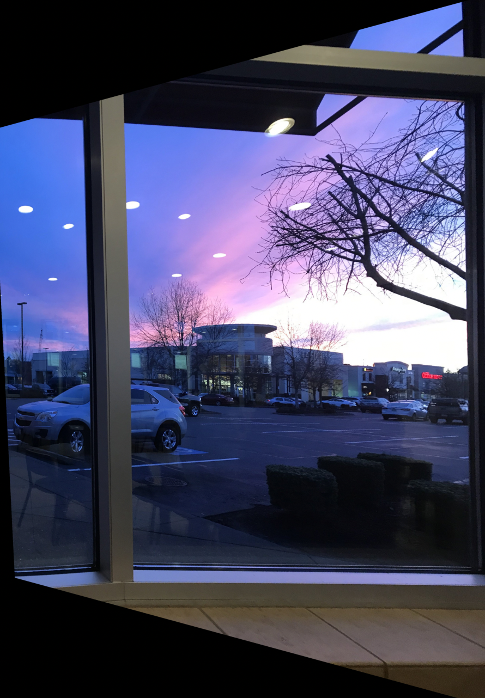
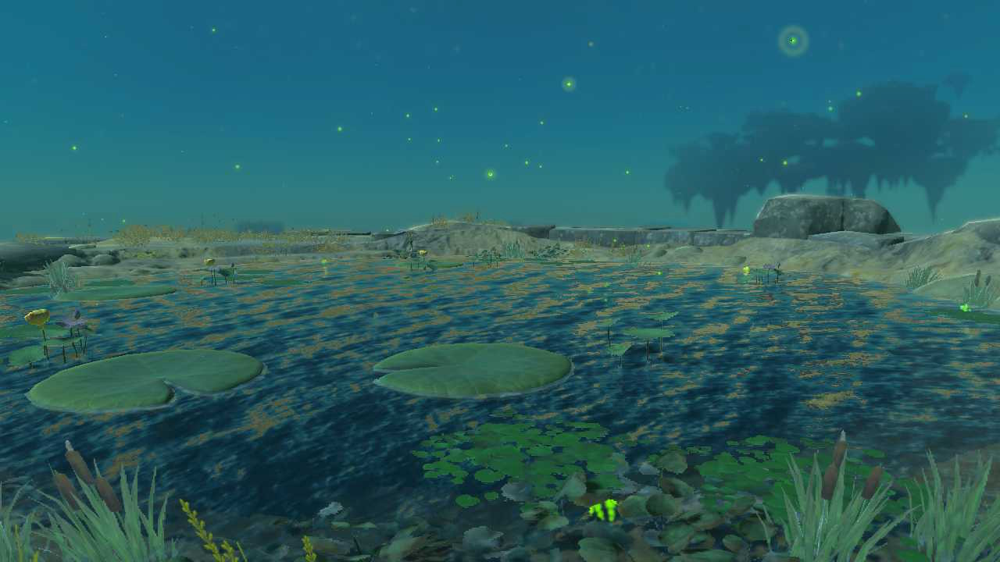
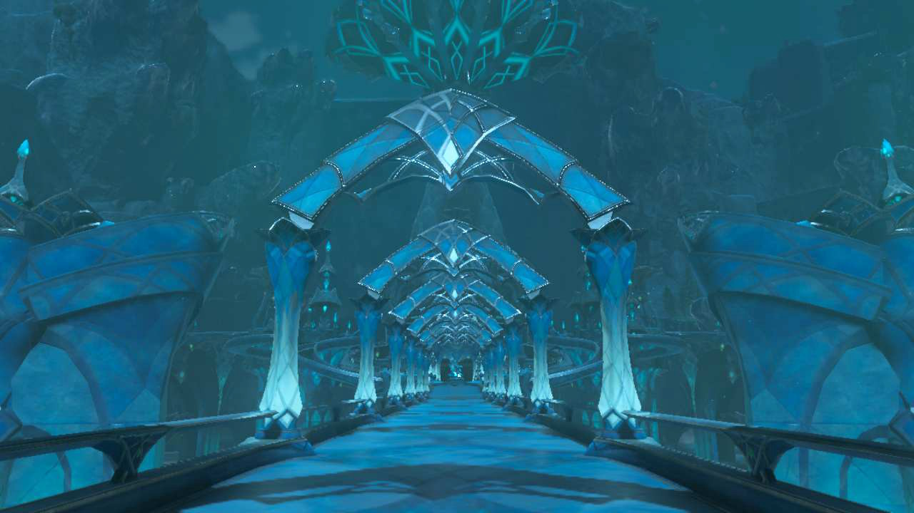

In this part, I create a homography matrix to warp Images onto different perspectives and ultimately create a photo mosaic.
In order to create a mosaic, I first created a homography matrix, which is a 3x3 matrix used for warping source points p into the destination points q. Here is a derivation:
These equations are solved via least squares to get the homography matrix H. Once we get that, we can inverse warp the destination points q using the inverse of the H matrix to calculate where the points in the source image came from. One tricky thing about the warping function was that I needed to make a new bigger canvas for warped image just in case some pixels from the source image warp to a pixel location beyond the size of the image. For interpolation, I used nearest instead of bilinear interpolation because 1) it was easier and 2) my code for bilinear interpolation for project 3 was very slow and I didn't want to use it again.
We can use this warp function to rectify images:

The clock in my room
A rug that my dad made for me

A photo I took of the sky in south Seattle
We can also use this function to create panoramas using two images. To blend the images seamlessly, I used code from project 2 to create Laplacian stacks of images and a Gaussian stack of a simple black and white mask (which I created myself).


View of Berkeley Campus from my friend's apartment


View of Downtown Berkeley from another friend's apartment


View from the Necluda Sky Archipelago from The Legend of Zelda: Tears of the Kingdom

Two phrases making an entirely new phrase

View from the Zora's Domain from The Legend of Zelda: Tears of the Kingdom
First, I use the provided harris corners code to detect corners in my image.
However, a lot of these Harris corners overlap. Therefore, I used ANMS (adaptive non-maximal suppression) to only get the Harris corners that are spread out.
Conceptually, ANMS is done using the Harris matrix -- each Harris corner is assigned a strength, so we try to suppress corners that are near another corner that has a higher strength. For example, in my drawing, B and A are near each other, but B has a larger strength than A, so B suppresses A. We can specify how many corners we want to keep, so we repeat the process of getting the distance for each Harris corner and then take the n corners with the largest distances.
Now that I have good corners of image 1 and image 2, I can match them together. To do that, I first perform SOPS (single-scale oriented patches). Conceptually, for each ANMS corner, I first blur the image, and then sample 8x8 pixels from that blurred image with a spacing of s=5 (if the sampled point is outside of the image, then that position is just 0). Then, the samples are normalized.
Then, I get the distance between the samples of both images. For each sample, I get the nearest neighbor (nn1) and the second nearest neighbor (nn2). Conceptually, if both nearest neighbors are equally as good, we don't want to use either of them -- we only want to take nn1 if nn1 is significantly better than nn2 (Lowe's trick). Therefore, we set a threshold (ex. 0.6) of how much better nn1 has to be compared to nn2. This can be used to match points together:
As you can see in these photos (especially in the zoomed version), some points map to more than one point, and many matches are not correct. Therefore, we use RANSAC to further filter bad matches.
RANSAC has the following algorithm: first, select four feature pairs at random, and compute a homography H off of those points. Then, compute inliers where the distance dist(qi’, H pi) is less then a certain threshold (qi is the destination and pi is the source). Keep the largest set of inliers and re-compute least-squares H estimate on all of the inliers. Doing so, I filtered out bad matches:
From there, I could use my code from project 4A to get a homography matrix from the calculated RANSAC points and warp the image and blend the two images together. Here is the final result:
I also tried comparing my auto mosaic with my manual mosaic. The automatic one looks smoother.
However, that doesn't necessarily mean that the automatic one is always better. Consider these photos:
Sunset from The Legend of Zelda: Tears of the Kingdom
These images were taken during a sunset, so the colors of the images don't match. In addition, since these images were taken near the sky, there are not many corners and instead many clouds that move around, which make it particularly hard for auto-stitching algorithms to detect good matches. This was the best I could do for this example:
In this project I played around with mosaics. Two key takeaways from this project are that 1) image mosaicing is a little bit more complex than the other topics in past projects because it incorporates morphing and blending at the same time, and 2) auto-stitching and manual stitching each come with tradeoffs where auto-stitching is significantly more efficient and usually more accurate but could fail entirely when the images don't have many corners or have different colors.